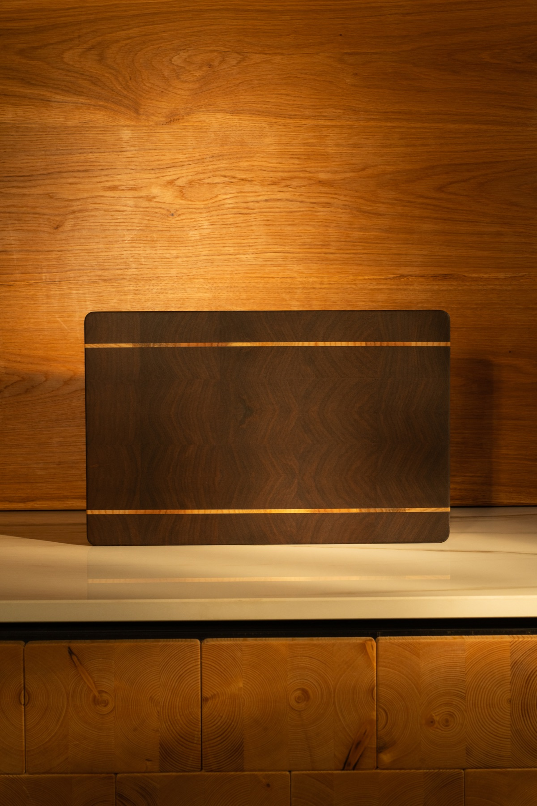
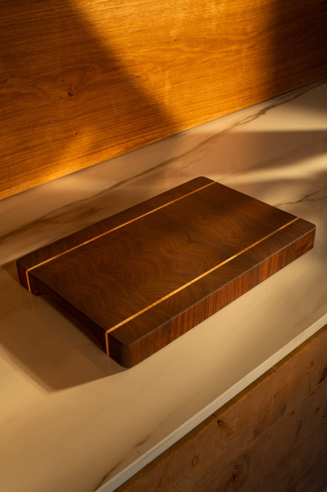
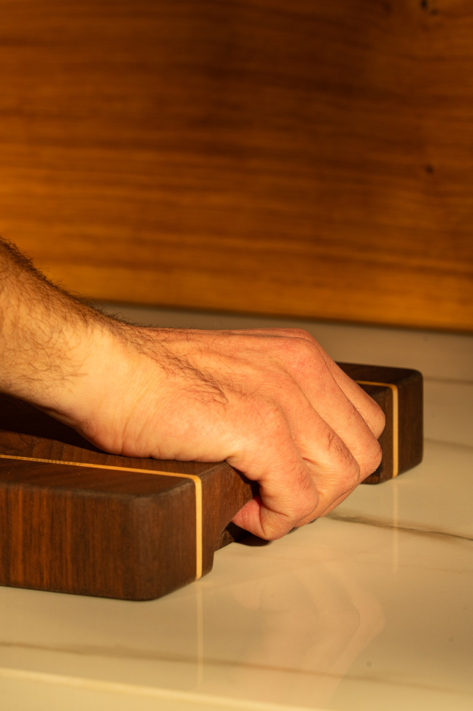
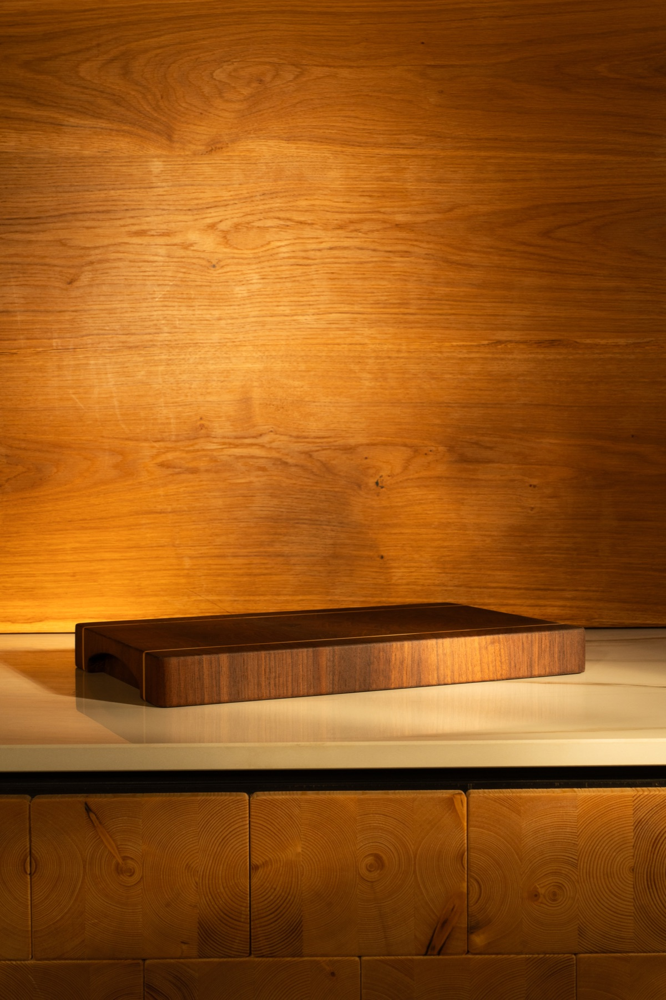
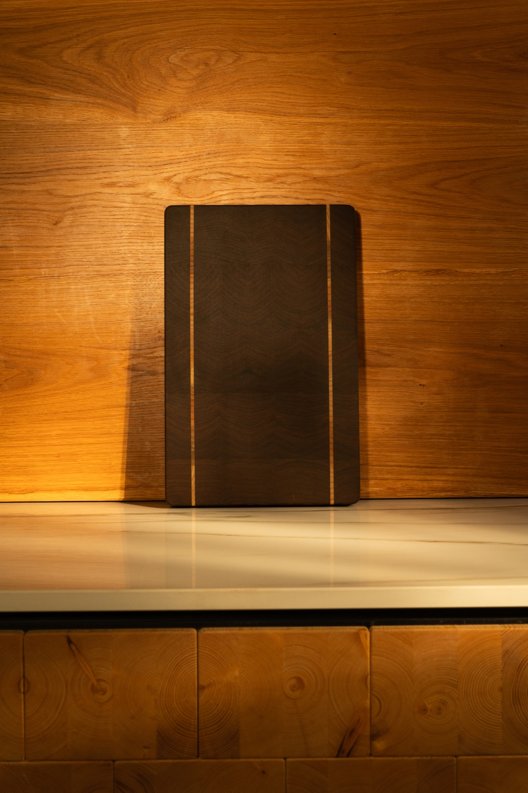
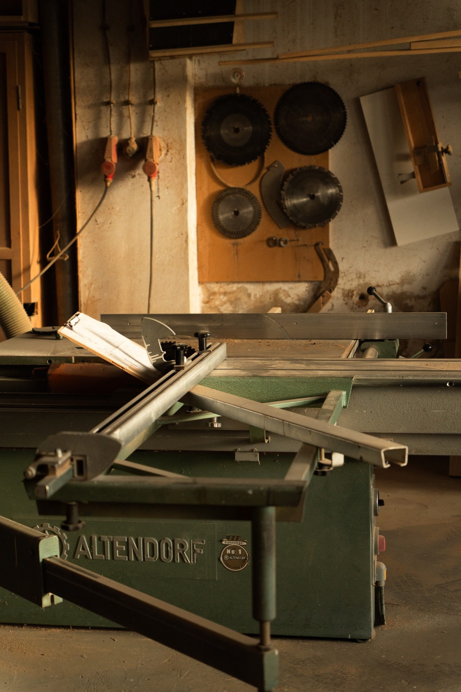
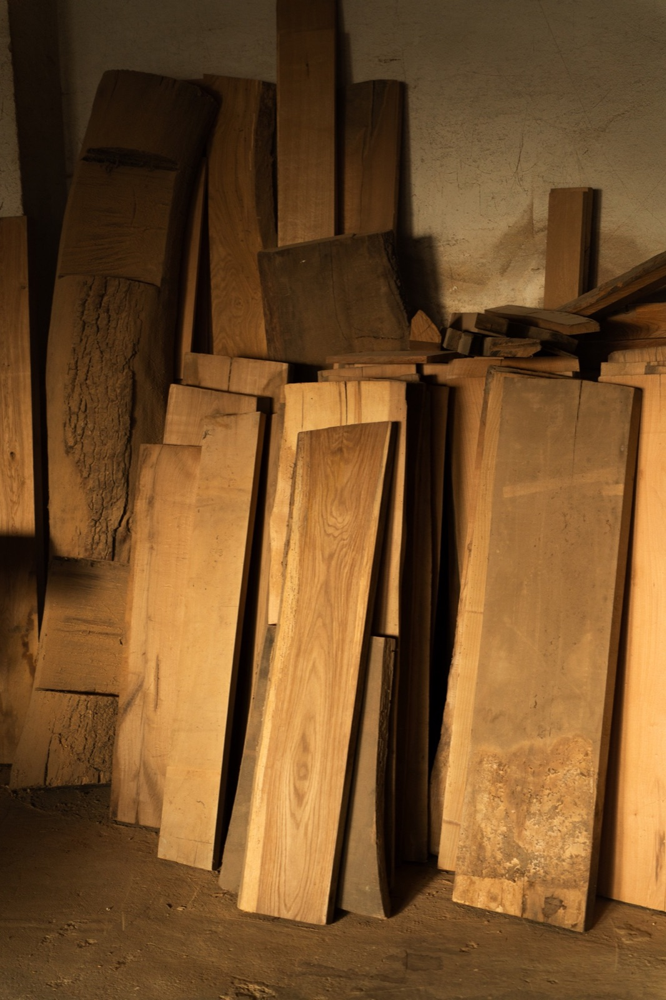
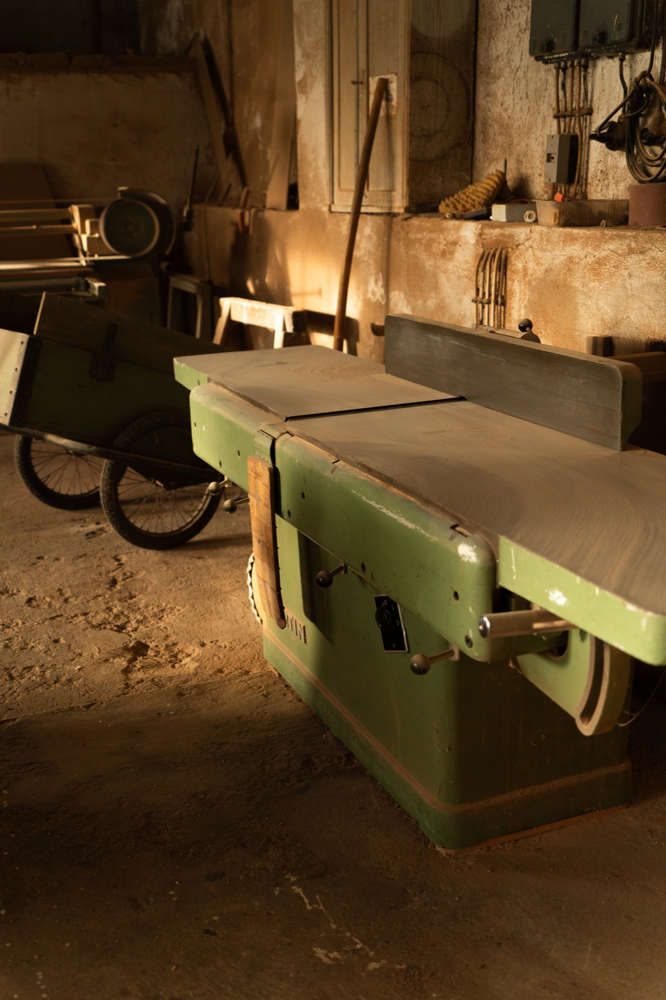

First impression
A good board feels calm.
Before you notice a detail, the overall impression has to work. Clear lines, balanced proportions and a presence without unnecessary noise.
Handcrafted · Solid wood · No mass production
Cutting boards and wood products with weight, substance and a clean finish. Made in central Germany for people who value real materials and honest work.
Philosophy
Many products try to feel premium through noise. More surface, more effects, more promises. We take a different approach. A good board starts with well-chosen wood, precise workmanship and proportions that still make sense years from now.





First impression
Before you notice a detail, the overall impression has to work. Clear lines, balanced proportions and a presence without unnecessary noise.
From the angled view, you can tell whether a board is simply photographed well or whether material, workmanship and form truly hold together.
Grip cut-outs are not decoration for us. They need to improve handling and fit naturally into the form.
A board should not only look good upright. In the quiet, low view, you see whether thickness, surface and workmanship are truly resolved.
We do not build short-lived kitchen objects. Our boards should have weight, age well and remain reliable for years.
First impression
Before you notice a detail, the overall impression has to work. Clear lines, balanced proportions and a presence without unnecessary noise.
From the angled view, you can tell whether a board is simply photographed well or whether material, workmanship and form truly hold together.
Grip cut-outs are not decoration for us. They need to improve handling and fit naturally into the form.
A board should not only look good upright. In the quiet, low view, you see whether thickness, surface and workmanship are truly resolved.
We do not build short-lived kitchen objects. Our boards should have weight, age well and remain reliable for years.
Workshop
Traditional machines we stay loyal to for a reason. Precisely adjusted, carefully guided and used for results that do not just look good today, but still hold up tomorrow.



Custom work
Whether you want engraving, a juice groove, specific dimensions, selected woods or a custom gift: we discuss your board directly with you and assess what makes sense and what can be executed cleanly.
Preliminary discussion by e-mail or phone. You outline the idea, dimensions, intended use and wishes.
We assess suitable woods, construction, format and meaningful details for your board.
You receive a clear assessment of effort, price and feasibility – without obligation.
Once approved, we build your board cleanly and in line with your requirements.
Restoration service
Even a good board needs attention over time. That is why we offer two levels of restoration depending on condition and the result you want.
For boards with normal signs of use. Refresh the surface, smooth it and care for it again – clean, quick and sensible.
For boards that need clearly more attention. More intensive reworking with a renewed surface and comprehensive refresh.
About
Edle Hölzer grew out of the shared passion of Özgür and Serkan for honest craftsmanship, strong materials and thoughtful design. What started in a small workshop has grown into a workshop-based brand with a clear standard: durable wood products, cleanly made and free of unnecessary show.
I am the founder of Edle Hölzer, a craftsman for around 20 years, and responsible for design, wood selection and production.
In central Germany, I make cutting boards from oak, walnut, reclaimed timber and other carefully selected woods – traditionally and deliberately without CNC.
Every board is made by hand with precision. It should last, carry character and never feel like an anonymous mass-produced object.
I am an engineer, hobby photographer and responsible for the online presence of Edle Hölzer.
My role is to make Özgür's craftsmanship visible through photography, video and a clear presentation of what stands behind the work.
I am not interested in artificial marketing. I care about showing regional woods, real joinery and durable design in a way that feels honest, high-quality and understandable.
For businesses
Standard gifts are forgotten quickly. A solid wood product remains. We produce small runs for Christmas gifts, corporate gifts, custom pieces or solid wood business cards.

Closing
In the end, what matters is not how loud a product feels, but whether it is cleanly built and reliable in everyday use.